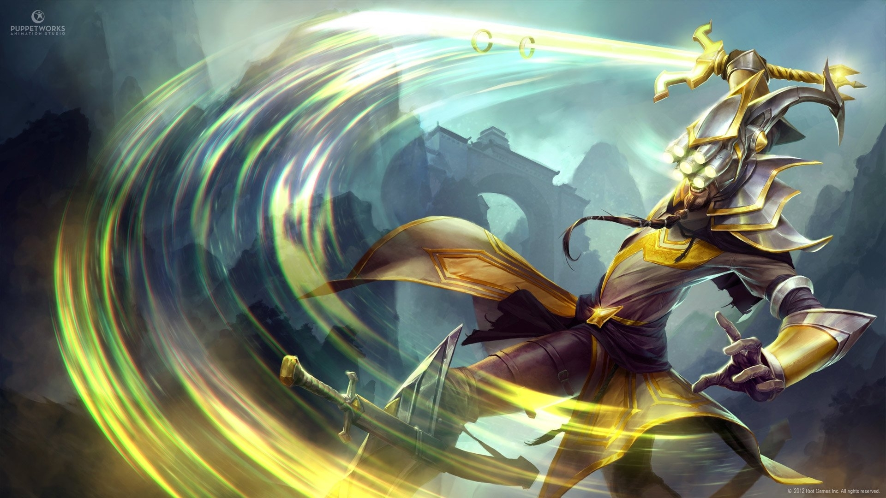

Master Yi, O Espadachim Wuju
Rota
-
Passiva
DÁDIVA DOS AFOGADOS
A cada alguns ataques básicos consecutivos, Master Yi ataca duas vezes.
-
Habilidade Q
ATAQUE ALPHA
Master Yi se teleporta pelo campo de batalha tão rápido que não pode ser visto, causando Dano Físico a várias unidades pelo caminho enquanto fica inalvejável. O Ataque Alpha pode causar Acerto Crítico e Dano Físico adicional contra monstros. Ataques básicos reduzem o Tempo de Recarga de Ataque Alpha.
-
Habilidade W
MEDITAR
Master Yi rejuvenesce seu corpo com a força da mente, restaurando Vida e recebendo dano reduzido por um curto período. Além disso, ele recebe acúmulos de Ataque Duplo e pausa a duração restante de Estilo Wuju e de Highlander para cada segundo de canalização.
-
Habilidade E
ESTILO WUJU
Concede Dano Verdadeiro adicional em ataques básicos.
-
Habilidade R

HIGHLANDER
Master Yi se movimenta com extrema agilidade, aumentando temporariamente suas Velocidades de Ataque e de Movimento, tornando-se imune a todos os efeitos de Lentidão. Abates ou assistências de Campeões estendem a duração de Highlander enquanto a habilidade estiver ativa. Reduz passivamente o Tempo de Recarga das outras habilidades a cada abate ou assistência.
Habilidades
Curiosidades
Master Yi treinou seu corpo e afiou sua mente para que pensamento e ação se tornassem quase um só. Embora ele prefira recorrer à violência como último recurso, a leveza e a velocidade de sua espada garantem uma resolução sempre veloz. Como um dos últimos praticantes da arte ioniana do Wuju, Yi dedicou sua vida a preservar o legado de seu povo, avaliando potenciais discípulos com as Sete Lentes da Perspicácia para identificar qual deles era o mais digno.